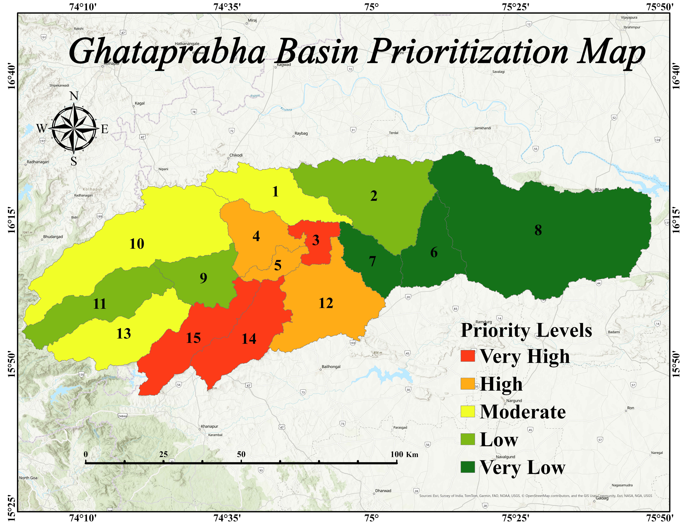

Geospatial Data Analyst with dual M.Sc. degrees in Geography (2022-2024) and Geoinformatics (2024-2026). Skilled in flood risk modeling, drought assessment, watershed prioritization, and LULC classification using ArcGIS Pro, HEC-RAS, and Python. Seeking roles in private GIS firms and internship opportunities where spatial intelligence drives real-world environmental and infrastructure decisions.
Flood Plain Mapping & Risk Assessment — Krishna River.
View Full ReportIntegrated Drought Assessment Engine — Northern Latur.
View Full ReportMorphometric Analysis & Sub-watershed Prioritization — Ghataprabha Basin.
View Full Report
Morphometric Analysis & Prioritization — Ghataprabha Basin

Landslide Susceptiblity Map

Land Use Land Cover Of Ghataprabha Basin

Morphometric Analysis & Prioritization — Panchganga Basin